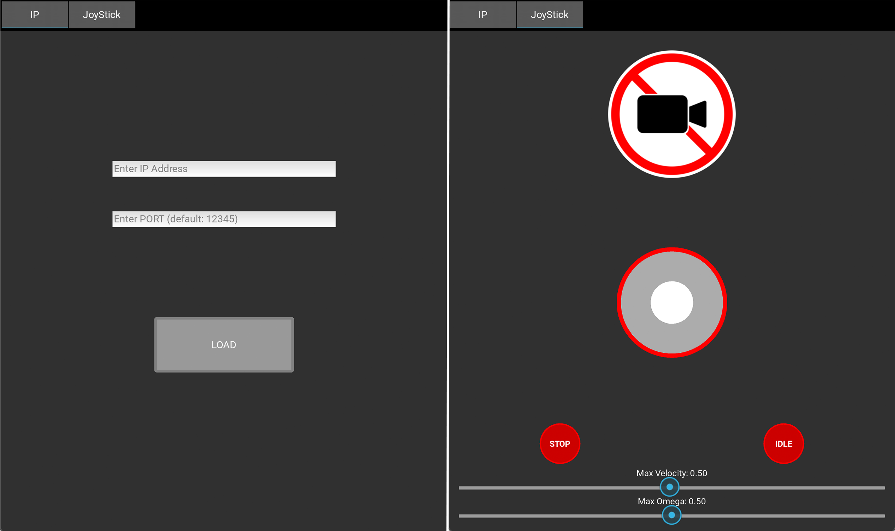
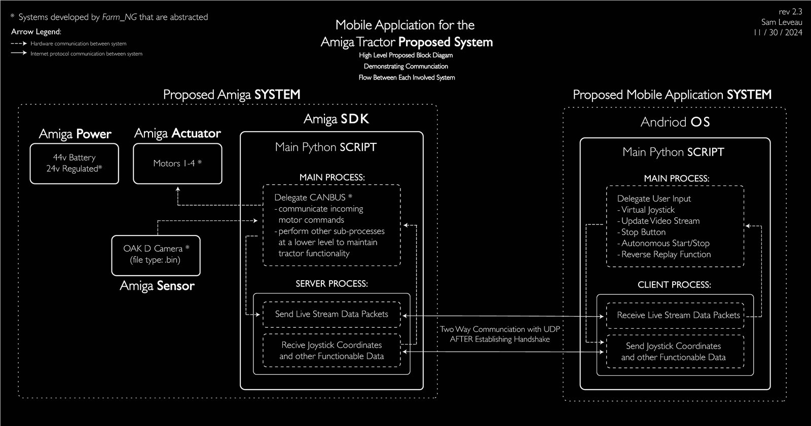

Agricultural Robotics / Mobile Control
Amiga Tractor Remote Control
My Senior Thesis Dissertation on mobile control and monitoring application for the Farm-ng Amiga autonomous electric tractor.

The Amiga on the UCSC farm
Overview and Problem
As a member of the Robotics and Control Lab, I worked on agricultural robotics with an emphasis on real-world use. The electric Amiga tractor supports low-till farming practices that can reduce reliance on pesticides and herbicides. The work I accomplished was recognized with an Earth Futures Frontier Fellowship.
The Problem: The lab had already developed the core autonomous navigation system, allowing the Amiga to travel down tramlines automatically. However, when this navigation required intervention, operators needed to remain physically close to the tractor, causing inconvenience and safety concerns.

Earlier mobile application interface
Solution: A Mobile Application
To mitigate this issue, I developed a mobile application for remote driving, live video streaming, emergency stopping, reverse replay, and pause or play control of autonomous operations.The application was developed in Python with Kivy and packaged for mobile deployment with Buildozer.
To use the application, an operator enters the Amiga server's IP address and port, connects, then uses a custom joystick with live video to control movement.
Mobile application demonstration
Demo
This demonstration shows myself on the UCSC campus farm using the mobile interface to communicate with and control the Amiga system. Firstly, I teloperated the Amiga to a tramline, then started autonomous navigation.

Communication block diagram
Network
The mobile device and tractor communicate over a server-client connection using User Datagram Protocol (UDP). Both devices operate on the same local network, typically through Wi-Fi or a hotspot.
For a deeper technical discussion, read the full senior thesis.
Mini Amiga laboratory test platform
Mini Amiga Test Platform
In addition to the main project, myself alongside another student, developed a smaller skid-steer mobile platform from scratch as an in-lab test system. It provided a practical way to develop and validate control behavior before working with the full-size tractor.
The system consisted of a lightweight frame, DC motors, a Raspberry Pi for control, and a camera for video streaming.